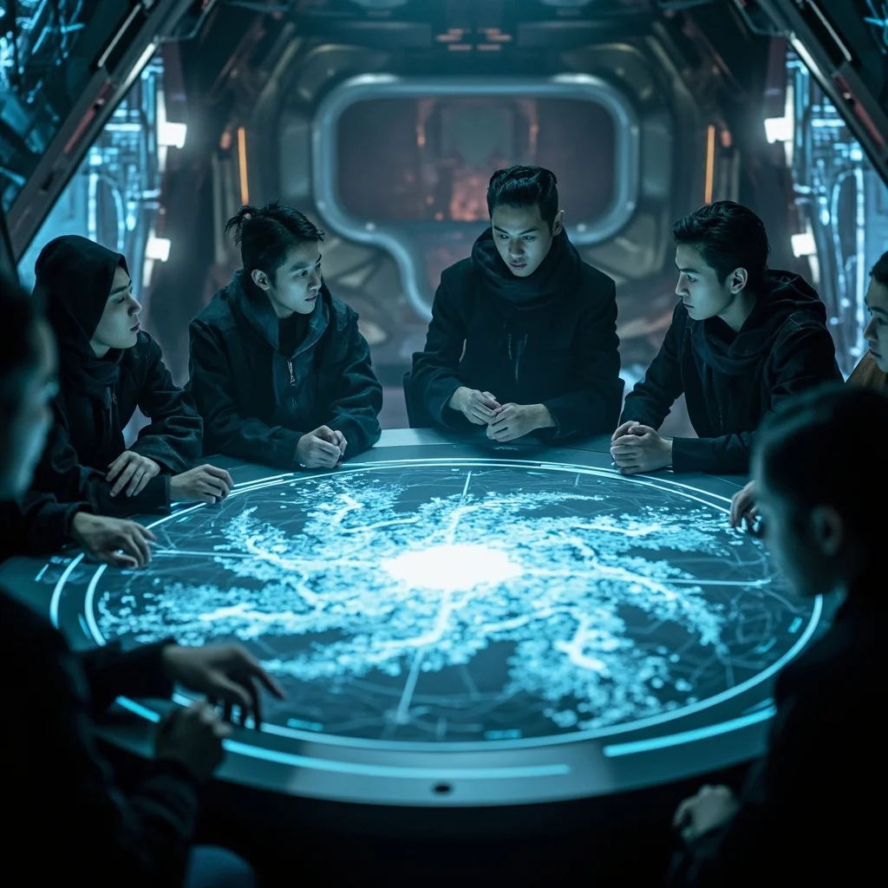
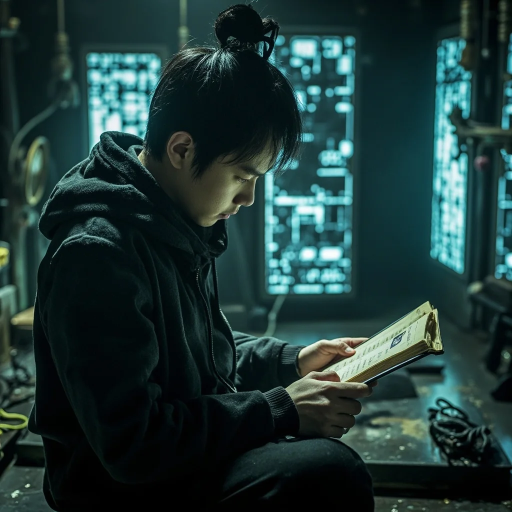

第2章：破序者
🎧 點擊播放有聲朗讀
🎧 點擊播放有聲朗讀
「靈氣漸衰始於公元2122年，現今地表靈氣濃度較百年前下降99.84%……」
末法時代降臨，常規修煉已無可能。人類唯有依仗古科技所遺「靈芯技術」與「編碼功法」，或可走出新道。
「靈根屬性：木靈根（微弱）/ 土靈根（隱性）」
「經絡完整度：67%（左側經絡受損）」
「修煉潛力：D級（極低）」
建議：數據化修煉路線，避開傳統靈根依賴。
「數據若道，亦可證道。」
虛擬靈脈模擬器啟動成功，檢測到微靈氣渦旋。引靈序開始——吸氣、屏息、呼氣，靈氣沿經絡流轉。

林塵在研究破序者組織的秘密資料，古老修真典籍與現代科技交融。

破序者成員在秘密會議室中討論對策，氣氛緊張。